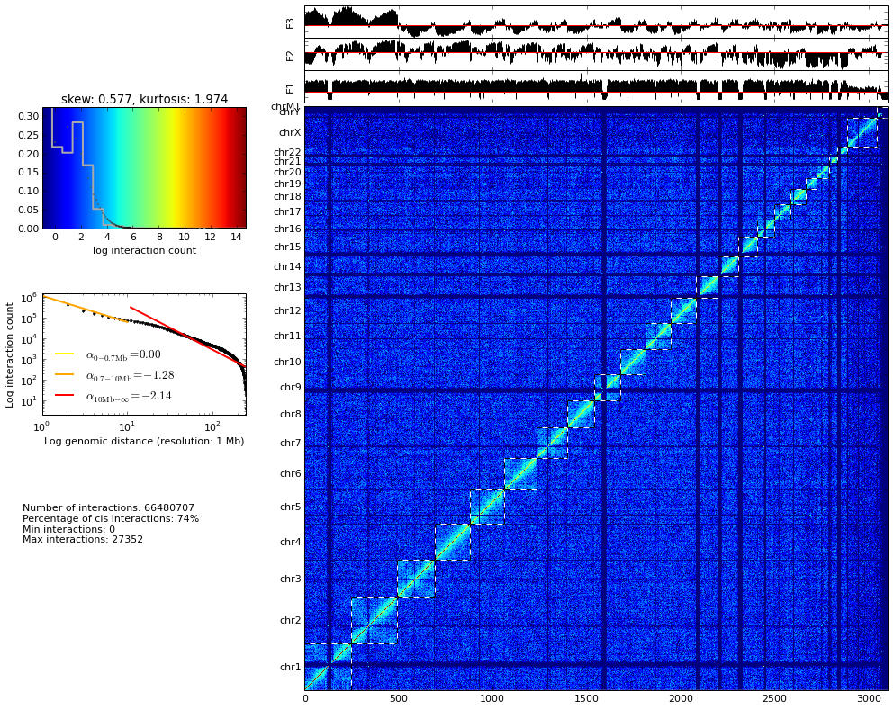
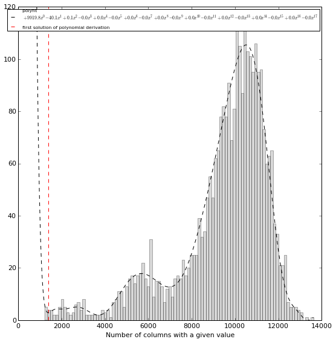
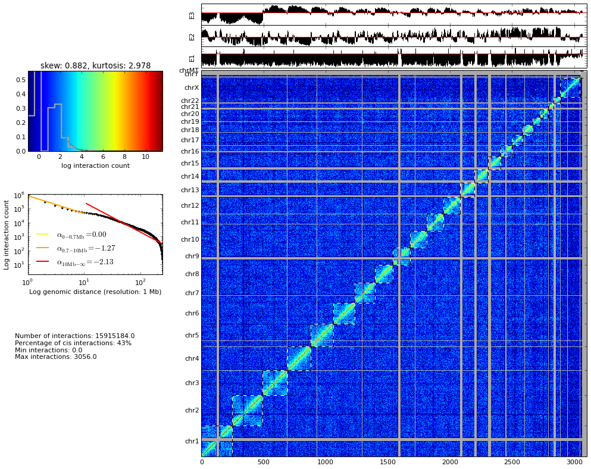

Mapping paired-end reads from NGS experiment (with GEM)¶
Download and index reference genome¶
Download last human reference genome from ucsc: http://hgdownload.cse.ucsc.edu/goldenPath/hg38/bigZips/ It’s better to download the file that contains each chromosome separately (like this we could only keep those which we are interested in): hg38.chromFa.tar.gz Uncompress the genome
tar -xzf hg38.chromFa.tar.gz
Check the header of the fasta files (it’s important to know how chromosomes are called in these files):
head chr1.fa
Create a single file with all chromosomes together:
cat chr1.fa chr2.fa chr3.fa chr4.fa chr5.fa chr6.fa chr7.fa chr8.fa chr9.fa chr10.fa chr11.fa chr12.fa chr13.fa chr14.fa chr15.fa chr16.fa chr17.fa chr18.fa chr19.fa chr20.fa chr21.fa chr22.fa chrX.fa chrY.fa chrM.fa > hg38.fa
Index reference genome:
gemtools index -i hg38.fa -t 8
Creates a file hg38.gem that we will be used for the mapping.
Mapping¶
Retrieving Hi-C experiment SRA format¶
Along this tutorial we are going to use the dataset from [Dixon2012]_ that can be downloaded at: http://www.ncbi.nlm.nih.gov/geo/query/acc.cgi?acc=GSE35156
For this part of the tutorial we are going to work with the experiments conducted on Homo sapiens IMR90 and ESC (replicate 1 in both cases).
Each of this replica consists of severa SRA files:
! ls ~/db/FASTQs/hsap/dixon_2012/*/*/*.sra
ls: cannot access /home/fransua/db/FASTQs/hsap/dixon_2012/*/*/*.sra: No such file or directory
First quality check on the data¶
First we need to convert SRA files in FASTQ format, as TADbit does not support reading directly from SRA. For this purpose we may want to use the SRA-toolkit from the NCBI (https://github.com/ncbi/sratoolkit). We finally shall endup with a single FASTQ file per experimental replica, with commands like (can last for hours):
%%bash
fastq-dump -DQ '+' --defline-seq '@$ac.$si' --split-files -A SRX116345 --gzip -O /scratch/db/FASTQs/hsap/dixon_2012/
2016-04-12T13:43:58 fastq-dump.2.5.7 err: item not found while constructing within virtual database module - the path 'SRX116345' cannot be opened as database or table
fastq-dump -A SRX116344 –gzip SRX116344//.sra
the compressed FASTQ files should be:
! ls ~/db/FASTQs/hsap/dixon_2012/
SRX116344 SRX116345
Usig these files directly we can infer the quality of the Hi-C experiment with TADbit:
from pytadbit.utils.fastq_utils import quality_plot
quality_plot('/home/fransua/db/FASTQs/hsap/dixon_2012/SRX116344.fastq.gz',
nreads=100000, r_enz='HindIII', paired=True)
from pytadbit.utils.fastq_utils import quality_plot
quality_plot('/home/fransua/db/FASTQs/hsap/dixon_2012/SRX116345.fastq.gz',
nreads=100000, r_enz='HindIII', paired=True)
Iterative mapping¶
TADbit implements the iterative mapping as proposed by [Imakaev2012]_
from pytadbit.mapping.mapper import iterative_mapping
name = 'SRX116344_200'
from pytadbit.mapping.full_mapper import full_mapping
mapped_r1 = full_mapping('ref_genome/hg38.gem', '/scratch/db/FASTQs/hsap/dixon_2012/%s.fastq' % name,
'mapped_read1', windows=((1,25), (1,75), (1,50),(1,100)),
r_enz='HindIII', frag_map=True, nthreads=8, clean=True, temp_dir='tmp')
Preparing FASTQ file
- conversion to MAP format
- trimming reads 1-25
Mapping reads in window 1-25...
TO GEM /home/fransua/Box/tadbits/tadbit-doc/doc/notebooks/tmp/SRX116344_200_XS30yn
Parsing result...
x removing GEM input /home/fransua/Box/tadbits/tadbit-doc/doc/notebooks/tmp/SRX116344_200_XS30yn
x removing map /home/fransua/Box/tadbits/tadbit-doc/doc/notebooks/tmp/SRX116344_200_XS30yn_full_1-25.map
Preparing MAP file
- trimming reads 1-75
x removing original input /home/fransua/Box/tadbits/tadbit-doc/doc/notebooks/tmp/SRX116344_200_XS30yn_filt_1-25.map
Mapping reads in window 1-75...
TO GEM /home/fransua/Box/tadbits/tadbit-doc/doc/notebooks/tmp/SRX116344_200_UZgsV7
Parsing result...
x removing GEM input /home/fransua/Box/tadbits/tadbit-doc/doc/notebooks/tmp/SRX116344_200_UZgsV7
x removing map /home/fransua/Box/tadbits/tadbit-doc/doc/notebooks/tmp/SRX116344_200_UZgsV7_full_1-75.map
Preparing MAP file
- trimming reads 1-50
x removing original input /home/fransua/Box/tadbits/tadbit-doc/doc/notebooks/tmp/SRX116344_200_UZgsV7_filt_1-75.map
Mapping reads in window 1-50...
TO GEM /home/fransua/Box/tadbits/tadbit-doc/doc/notebooks/tmp/SRX116344_200_EFl7SN
Parsing result...
x removing GEM input /home/fransua/Box/tadbits/tadbit-doc/doc/notebooks/tmp/SRX116344_200_EFl7SN
x removing map /home/fransua/Box/tadbits/tadbit-doc/doc/notebooks/tmp/SRX116344_200_EFl7SN_full_1-50.map
Preparing MAP file
- trimming reads 1-100
x removing original input /home/fransua/Box/tadbits/tadbit-doc/doc/notebooks/tmp/SRX116344_200_EFl7SN_filt_1-50.map
Mapping reads in window 1-100...
TO GEM /home/fransua/Box/tadbits/tadbit-doc/doc/notebooks/tmp/SRX116344_200_1EnI_f
Parsing result...
x removing GEM input /home/fransua/Box/tadbits/tadbit-doc/doc/notebooks/tmp/SRX116344_200_1EnI_f
x removing map /home/fransua/Box/tadbits/tadbit-doc/doc/notebooks/tmp/SRX116344_200_1EnI_f_full_1-100.map
- splitting into restriction enzyme (RE) fragments using ligation sites
- ligation sites are replaced by RE sites to match the reference genome
* enzyme: HindIII, ligation site: AAGCTAGCTT, RE site: AAGCTT
Preparing MAP file
- trimming reads 1-100
Mapping fragments of remaining reads...
TO GEM /home/fransua/Box/tadbits/tadbit-doc/doc/notebooks/tmp/SRX116344_200_kX6mt9
Parsing result...
print 'Mapping Read 1'
sams1 = iterative_mapping(
gem_index_path = 'ref_genome/hg38.gem',
fastq_path = '/scratch/db/FASTQs/hsap/dixon_2012/%s.fastq' % name,
out_sam_path = '/scratch/mapped_reads/%s_r1.sam' % name,
temp_dir = '/scratch/tmp_dir_%s/' % name,
range_start = [1 , 1 , 1 , 1 , 1 , 1 , 1 , 1 , 1 , 1 , 1 , 1 ], # starts with a flag sequence
range_stop = [20, 25, 30, 35, 40, 45, 50, 55, 60, 65, 70, 75],
nthreads = 8, # number of CPUs to use
max_reads_per_chunk = 40000000, # this is for computers with not too much RAM
single_end = True)
print ' created %s SAM files:' % len(sams1)
Mapping Read 1 Split input file /scratch/db/FASTQs/hsap/dixon_2012/SRX116344_200.fastq into chunks 2 chunks obtained Run iterative_mapping recursively on /scratch/tmp_dir_SRX116344_200/SRX116344_200.fastq.1 Run iterative_mapping recursively on /scratch/tmp_dir_SRX116344_200/SRX116344_200.fastq.2 Remove the chunks: /scratch/tmp_dir_SRX116344_200/SRX116344_200.fastq.1 /scratch/tmp_dir_SRX116344_200/SRX116344_200.fastq.2 Remove the chunks: /scratch/tmp_dir_SRX116344_200/SRX116344_200.fastq.1 /scratch/tmp_dir_SRX116344_200/SRX116344_200.fastq.2 created 24 SAM files:
print '\nMapping Read 2'
sams2 = iterative_mapping(
gem_index_path = 'ref_genome/hg38.gem',
fastq_path = '/scratch/db/FASTQs/hsap/dixon_2012/%s.fastq' % name,
out_sam_path = '/scratch/mapped_reads/%s_r2.sam' % name,
temp_dir = '/scratch/tmp_dir_%s/' % name,
range_start = [102, 102, 102, 102, 102, 102, 102, 102, 102, 102, 102, 102],
range_stop = [121, 126, 131, 136, 141, 146, 151, 156, 161, 166, 171, 176],
nthreads = 8,
max_reads_per_chunk = 40000000,
single_end = True)
print ' created %s SAM files:' % len(sams2)
Mapping Read 2 Split input file /scratch/db/FASTQs/hsap/dixon_2012/SRX116344_200.fastq into chunks 2 chunks obtained Run iterative_mapping recursively on /scratch/tmp_dir_SRX116344_200/SRX116344_200.fastq.1 Run iterative_mapping recursively on /scratch/tmp_dir_SRX116344_200/SRX116344_200.fastq.2 Remove the chunks: /scratch/tmp_dir_SRX116344_200/SRX116344_200.fastq.1 /scratch/tmp_dir_SRX116344_200/SRX116344_200.fastq.2 Remove the chunks: /scratch/tmp_dir_SRX116344_200/SRX116344_200.fastq.1 /scratch/tmp_dir_SRX116344_200/SRX116344_200.fastq.2 created 24 SAM files:
Map parsing¶
In case we lost the sams1/sams2 lists of paths we can “reload” them like this:
import os
sams1 = []
sams2 = []
for sam in os.listdir('/scratch/mapped_reads/'):
if '_r1.sam' in sam:
sams1.append('/scratch/mapped_reads/' + sam)
else:
sams2.append('/scratch/mapped_reads/' + sam)
print sams1
print sams2
['/scratch/mapped_reads/SRX116344_200_r1.sam.1.3:1-30', '/scratch/mapped_reads/SRX116344_200_r1.sam.1.6:1-45', '/scratch/mapped_reads/SRX116344_200_r1.sam.1.7:1-50', '/scratch/mapped_reads/SRX116344_200_r1.sam.2.8:1-55', '/scratch/mapped_reads/SRX116344_200_r1.sam.1.12:1-75', '/scratch/mapped_reads/SRX116344_200_r1.sam.2.12:1-75', '/scratch/mapped_reads/SRX116344_200_r1.sam.2.6:1-45', '/scratch/mapped_reads/SRX116344_200_r1.sam.1.1:1-20', '/scratch/mapped_reads/SRX116344_200_r1.sam.2.1:1-20', '/scratch/mapped_reads/SRX116344_200_r1.sam.1.9:1-60', '/scratch/mapped_reads/SRX116344_200_r1.sam.1.4:1-35', '/scratch/mapped_reads/SRX116344_200_r1.sam.1.10:1-65', '/scratch/mapped_reads/SRX116344_200_r1.sam.2.4:1-35', '/scratch/mapped_reads/SRX116344_200_r1.sam.2.9:1-60', '/scratch/mapped_reads/SRX116344_200_r1.sam.2.5:1-40', '/scratch/mapped_reads/SRX116344_200_r1.sam.2.2:1-25', '/scratch/mapped_reads/SRX116344_200_r1.sam.1.8:1-55', '/scratch/mapped_reads/SRX116344_200_r1.sam.2.7:1-50', '/scratch/mapped_reads/SRX116344_200_r1.sam.1.11:1-70', '/scratch/mapped_reads/SRX116344_200_r1.sam.1.2:1-25', '/scratch/mapped_reads/SRX116344_200_r1.sam.2.3:1-30', '/scratch/mapped_reads/SRX116344_200_r1.sam.1.5:1-40', '/scratch/mapped_reads/SRX116344_200_r1.sam.2.11:1-70', '/scratch/mapped_reads/SRX116344_200_r1.sam.2.10:1-65'] ['/scratch/mapped_reads/SRX116344_200_r2.sam.1.11:102-171', '/scratch/mapped_reads/SRX116344_200_r2.sam.2.2:102-126', '/scratch/mapped_reads/SRX116344_200_r2.sam.2.9:102-161', '/scratch/mapped_reads/SRX116344_200_r2.sam.2.12:102-176', '/scratch/mapped_reads/SRX116344_200_r2.sam.2.5:102-141', '/scratch/mapped_reads/SRX116344_200_r2.sam.1.2:102-126', '/scratch/mapped_reads/SRX116344_200_r2.sam.1.8:102-156', '/scratch/mapped_reads/SRX116344_200_r2.sam.1.10:102-166', '/scratch/mapped_reads/SRX116344_200_r2.sam.1.5:102-141', '/scratch/mapped_reads/SRX116344_200_r2.sam.1.9:102-161', '/scratch/mapped_reads/SRX116344_200_r2.sam.1.7:102-151', '/scratch/mapped_reads/SRX116344_200_r2.sam.2.6:102-146', '/scratch/mapped_reads/SRX116344_200_r2.sam.1.4:102-136', '/scratch/mapped_reads/SRX116344_200_r2.sam.1.1:102-121', '/scratch/mapped_reads/SRX116344_200_r2.sam.2.11:102-171', '/scratch/mapped_reads/SRX116344_200_r2.sam.2.4:102-136', '/scratch/mapped_reads/SRX116344_200_r2.sam.2.7:102-151', '/scratch/mapped_reads/SRX116344_200_r2.sam.1.6:102-146', '/scratch/mapped_reads/SRX116344_200_r2.sam.1.3:102-131', '/scratch/mapped_reads/SRX116344_200_r2.sam.2.8:102-156', '/scratch/mapped_reads/SRX116344_200_r2.sam.2.10:102-166', '/scratch/mapped_reads/SRX116344_200_r2.sam.2.3:102-131', '/scratch/mapped_reads/SRX116344_200_r2.sam.2.1:102-121', '/scratch/mapped_reads/SRX116344_200_r2.sam.1.12:102-176']
Mapping analysis¶
We collect mapped reads at all window sizes into a single file (a single file for read1, and a single file for read2). These 2 files also contain the placement of the restriction enzyme sites in the genome.
from pytadbit.parsers.sam_parser import parse_sam
from pytadbit.parsers.genome_parser import parse_fasta
# loads the genome
genome_seq = parse_fasta('/scratch/db/index_files/Homo_sapiens-79/Homo_sapiens.fa',
chr_names=['chr' + str(c) for c in range(1, 23) + ['X', 'Y', 'MT']])
Parsing 1 as chr1 Parsing 2 as chr2 Parsing 3 as chr3 Parsing 4 as chr4 Parsing 5 as chr5 Parsing 6 as chr6 Parsing 7 as chr7 Parsing 8 as chr8 Parsing 9 as chr9 Parsing 10 as chr10 Parsing 11 as chr11 Parsing 12 as chr12 Parsing 13 as chr13 Parsing 14 as chr14 Parsing 15 as chr15 Parsing 16 as chr16 Parsing 17 as chr17 Parsing 18 as chr18 Parsing 19 as chr19 Parsing 20 as chr20 Parsing 21 as chr21 Parsing 22 as chr22 Parsing X as chrX Parsing Y as chrY Parsing MT as chrMT
# new file with info of each "read1" and its placement with respect to RE sites
reads1 = '/scratch/results/%s_r1_map.tsv' % name
# new file with info of each "read2" and its placement with respect to RE sites
reads2 = '/scratch/results/%s_r2_map.tsv' % name
print 'Parse SAM files...'
parse_sam(sams1, sams2, reads1, reads2, genome_seq, 'HindIII', verbose=True, ncpus=8)
Parse SAM files... Searching and mapping RE sites to the reference genome Found 859855 RE sites Loading read1 Loading read2 loading GEM file: /scratch/mapped_reads/SRX116344_200_r1.sam.1.3:1-30 loading GEM file: /scratch/mapped_reads/SRX116344_200_r1.sam.1.6:1-45 loading GEM file: /scratch/mapped_reads/SRX116344_200_r1.sam.1.7:1-50 loading GEM file: /scratch/mapped_reads/SRX116344_200_r1.sam.2.8:1-55 loading GEM file: /scratch/mapped_reads/SRX116344_200_r1.sam.1.12:1-75 loading GEM file: /scratch/mapped_reads/SRX116344_200_r1.sam.2.12:1-75 loading GEM file: /scratch/mapped_reads/SRX116344_200_r1.sam.2.6:1-45 loading GEM file: /scratch/mapped_reads/SRX116344_200_r1.sam.1.1:1-20 loading GEM file: /scratch/mapped_reads/SRX116344_200_r1.sam.1.2:1-25 loading GEM file: /scratch/mapped_reads/SRX116344_200_r1.sam.2.9:1-60 loading GEM file: /scratch/mapped_reads/SRX116344_200_r1.sam.1.10:1-65 loading GEM file: /scratch/mapped_reads/SRX116344_200_r1.sam.2.1:1-20 loading GEM file: /scratch/mapped_reads/SRX116344_200_r1.sam.2.4:1-35 loading GEM file: /scratch/mapped_reads/SRX116344_200_r1.sam.1.4:1-35 loading GEM file: /scratch/mapped_reads/SRX116344_200_r1.sam.1.9:1-60 loading GEM file: /scratch/mapped_reads/SRX116344_200_r1.sam.2.2:1-25 loading GEM file: /scratch/mapped_reads/SRX116344_200_r1.sam.2.3:1-30 loading GEM file: /scratch/mapped_reads/SRX116344_200_r1.sam.2.11:1-70 loading GEM file: /scratch/mapped_reads/SRX116344_200_r1.sam.1.8:1-55 loading GEM file: /scratch/mapped_reads/SRX116344_200_r1.sam.1.11:1-70 loading GEM file: /scratch/mapped_reads/SRX116344_200_r1.sam.2.5:1-40 loading GEM file: /scratch/mapped_reads/SRX116344_200_r1.sam.2.7:1-50 loading GEM file: /scratch/mapped_reads/SRX116344_200_r1.sam.2.10:1-65 loading GEM file: /scratch/mapped_reads/SRX116344_200_r1.sam.1.5:1-40 Sorting reads Removing temporary files...loading GEM file: /scratch/mapped_reads/SRX116344_200_r2.sam.1.11:102-171 loading GEM file: /scratch/mapped_reads/SRX116344_200_r2.sam.2.2:102-126 loading GEM file: /scratch/mapped_reads/SRX116344_200_r2.sam.2.9:102-161 loading GEM file: /scratch/mapped_reads/SRX116344_200_r2.sam.2.12:102-176 loading GEM file: /scratch/mapped_reads/SRX116344_200_r2.sam.2.5:102-141 loading GEM file: /scratch/mapped_reads/SRX116344_200_r2.sam.1.2:102-126 loading GEM file: /scratch/mapped_reads/SRX116344_200_r2.sam.1.10:102-166 loading GEM file: /scratch/mapped_reads/SRX116344_200_r2.sam.1.8:102-156 loading GEM file: /scratch/mapped_reads/SRX116344_200_r2.sam.2.11:102-171 loading GEM file: /scratch/mapped_reads/SRX116344_200_r2.sam.2.6:102-146 loading GEM file: /scratch/mapped_reads/SRX116344_200_r2.sam.1.5:102-141 loading GEM file: /scratch/mapped_reads/SRX116344_200_r2.sam.1.9:102-161 loading GEM file: /scratch/mapped_reads/SRX116344_200_r2.sam.1.7:102-151 loading GEM file: /scratch/mapped_reads/SRX116344_200_r2.sam.1.1:102-121 loading GEM file: /scratch/mapped_reads/SRX116344_200_r2.sam.2.4:102-136 loading GEM file: /scratch/mapped_reads/SRX116344_200_r2.sam.1.6:102-146 loading GEM file: /scratch/mapped_reads/SRX116344_200_r2.sam.1.4:102-136 loading GEM file: /scratch/mapped_reads/SRX116344_200_r2.sam.1.3:102-131 loading GEM file: /scratch/mapped_reads/SRX116344_200_r2.sam.2.7:102-151 loading GEM file: /scratch/mapped_reads/SRX116344_200_r2.sam.2.8:102-156 loading GEM file: /scratch/mapped_reads/SRX116344_200_r2.sam.2.3:102-131 loading GEM file: /scratch/mapped_reads/SRX116344_200_r2.sam.2.10:102-166 loading GEM file: /scratch/mapped_reads/SRX116344_200_r2.sam.1.12:102-176 loading GEM file: /scratch/mapped_reads/SRX116344_200_r2.sam.2.1:102-121
Plot iterative mapping¶
from pytadbit.mapping.analyze import plot_iterative_mapping
lengths = plot_iterative_mapping(reads1, reads2, total_reads=51493359)

Merging mapped “read1” and “read2”¶
We create a new file that will contain only the reads mapped in both ends (“read1” and “read2” uniquely mapped)
from pytadbit.mapping.mapper import get_intersection
reads = '/scratch/results/%s_both_map.tsv' % name
get_intersection(reads1, reads2, reads, verbose=True)
Found 41123290 pair of reads mapping uniquely
Descriptive statistics¶
In order to confirm the size of the inserts fed to the sequencer, we can look at the distribution of genomic distances between the mapped read1 and read2 of dangling-ends. From this analysis we can extract the maximum insert size, that is an important value to classify reads during the filtering process.
from pytadbit.mapping.analyze import insert_sizes
insert_sizes(reads)
Simple descriptive stats¶
How the count in interaction falls as the genomic distance is larger¶
Here we want to see how the interaction between to two genomic region decays as the distance between these two loci is larger. Theexpectation is that at distances between 700 kb and 10 Mb the decay in logarithm scale is -1.
In the example below are represented the interactions in between genomic regions that, each, spans over 10 kb (resolution parameter).
from pytadbit.mapping.analyze import plot_distance_vs_interactions
plot_distance_vs_interactions(reads, max_diff=10000, resolution=10000)
Genomic coverage of our reads¶
In the plot above we want to see the distribution of the reads mapped in the genome (regardless of their interactions). Here, te expecation is to see a minimum number of reads mapping in all positions of the genome with falls around centromeres and telomeres.
from pytadbit.mapping.analyze import plot_genomic_distribution
plot_genomic_distribution(reads, resolution=50000, first_read=True)
The picks in the plot correspond to PCR artifact that we will remove in the filtering step (see bellow)
This plot can be zoomed in the y axis in order to avoid depending on these artifacts. The plot can also be generated only for a given number of chromosomes
plot_genomic_distribution(reads, resolution=50000, first_read=True, ylim=(1, 100),
chr_names=['chr8'], nreads=1000000)
Interaction matrix¶
The plot above is probablythe most informative, in order to infer the qualtity of an Hi-C experiment. This plot represents the matrix of interaction, the distribution of these interaction as an histogram or as a function of genomic distance. Some statistics on the specificity of these interaction, like the cis-to-trans ratio (expected to be between 40 and 60%), and the 3 first eigen vectors of the matrix highlighting the principal structural features of the matrix (in non-normalized matrices eigen-vectors are not very informative however).
from pytadbit.mapping.analyze import hic_map
hic_map(reads, resolution=1000000, show=True)
/usr/lib/python2.7/dist-packages/numpy/core/_methods.py:55: RuntimeWarning: Mean of empty slice.
warnings.warn("Mean of empty slice.", RuntimeWarning)
/usr/lib/python2.7/dist-packages/numpy/core/_methods.py:67: RuntimeWarning: invalid value encountered in double_scalars
ret = ret.dtype.type(ret / rcount)

Filter reads¶
In order to remove interactions between reads that are experimental artifacts, or just uninoformative, a series of adjustable filters can be applied:
- self-circle : reads are comming from a single RE fragment and point to the outside (—-<===—===>—)
- dangling-end : reads are comming from a single RE fragment and point to the inside (—-===>—<===—)
- error : reads are comming from a single RE fragment and point in the same direction
- extra dangling-end : reads are comming from different RE fragment but are close enough (< max_molecule length) and point to the inside
- too close from RES : semi-dangling-end filter, start position of one of the read is too close (5 bp by default) from RE cutting site.
- too short : remove reads comming from small restriction less than 100 bp (default) because they are comparable to the read length
- too large : remove reads comming from large restriction fragments (default: 100 Kb, P < 10-5 to occur in a randomized genome) as they likely represent poorly assembled or repeated regions
- over-represented : reads coming from the top 0.5% most frequently detected restriction fragments, they may be prone to PCR artifacts or represent fragile regions of the genome or genome assembly errors
- duplicated : the combination of the start positions of the reads is repeated -> PCR artifact (only keep one copy)
- random breaks : start position of one of the read is too far (more than min_dist_to_re) from RE cutting site. Non-canonical enzyme activity or random physical breakage of the chromatin.
The function filter_reads works in parallel (4 threads), and creates
one file per filter (10 files, which path are an extension of the input
file containing the reads).
from pytadbit.mapping.filter import filter_reads
masked = filter_reads(reads, max_molecule_length=505, min_dist_to_re=760,
over_represented=0.005, max_frag_size=100000,
min_frag_size=100, re_proximity=5)
Filtered reads (and percentage of total):
TOTAL mapped : 41123290 (100.00%)
-----------------------------------------------------
1- self-circle : 653029 ( 1.59%)
2- dangling-end : 17054088 ( 41.47%)
3- error : 250158 ( 0.61%)
4- extra dangling-end : 4115590 ( 10.01%)
5- too close from RES : 5761851 ( 14.01%)
6- too short : 307169 ( 0.75%)
7- too large : 63151 ( 0.15%)
8- over-represented : 1334209 ( 3.24%)
9- duplicated : 9132048 ( 22.21%)
10- random breaks : 18282481 ( 44.46%)
Previous function creates one file per filter. Each containing the list
of IDs of the reads falling into the corresponding filter. In order to
apply filter, the function apply_filter will create a new file
without the reads contained in the files. By default all filters are
applied.
from pytadbit.mapping.filter import apply_filter
filt_reads = '/scratch/results/%s_filtered_map.tsv' % name
apply_filter(reads, filt_reads, masked)
9403143 reads written to file
An example to apply only the 9 first filters:
apply_filter(reads, filt_reads, masked, filters=[1,2,3,4,5,6,7,8,9])
13666735 reads written to file
Filters can also be applied in a “reverse” way in order to select only “bad” reads.
sc_de = '/scratch/results/%s_self_circles_and_dangling-ends.tsv' % name
apply_filter(reads, sc_de, masked, filters=[1,2], reverse=True)
17707117 reads written to file
This can be used for example to analyze the distribution of dangling-ends and self-circle along the genome
plot_genomic_distribution(sc_de, resolution=50000, first_read=True, chr_names=['chr8'])
Once filtered the peaks previously seen should disapeear:
plot_genomic_distribution(reads, resolution=50000, first_read=True, chr_names=['chr8'],
nreads=1000000, ylim=(0,250))

plot_genomic_distribution(filt_reads, resolution=50000, first_read=True, chr_names=['chr8'],
nreads=1000000, ylim=(0,250))
hic_map(filt_reads, resolution=1000000, show=True)

These maps can be zoomed to a given region, like first chromosome:
hic_map(filt_reads, resolution=1000000, show=True, focus=(1, 250))

Same as above, calling the focus using directly chromosome name and using a smaller resolution (100 kb):
hic_map(filt_reads, resolution=100000, show=True, focus='chr1')

Filtering and normalization¶
Removal of columns having to few data¶
Depending on the normalization method, the presence of columns with high proportion of zeros can prevent to converge into a satisfactory result.
For this part of the processing of the data we will start to work on full matrices. This step is critical in the sense that we have to decide at which resolution we are going to analyze the data. For this tutorial we will use a resolution of 1 Mb.
Note : as all previous steps ended in the generation of a single file, we just need to load the name of the saved file with the filtered reads:
name = 'SRX116344_200'
filt_reads = '/scratch/results/%s_filtered_map.tsv' % name
from pytadbit import load_hic_data_from_reads
hic_data = load_hic_data_from_reads(filt_reads, resolution=1000000)
We can visualize the matrix using the same function as before, with the file of reads:
from pytadbit.mapping.analyze import hic_map
hic_map(hic_data, show=True)
hic_data.filter_columns(draw_hist=True)
WARNING: removing columns having more than 2327 zeroes: 123 124 125 126 127 128 129 130 131 132 133 134 135 136 137 138 139 140 141 142 143 145 340 492 585 742 882 930 931 932 953 1124 1294 1295 1296 1440 1441 1541 1585 1586 1587 1588 1589 1590 1591 1592 1593 1594 1595 1596 1597 1598 1599 1600 1601 1602 1603 1607 1680 1721 1866 1867 1868 1950 1986 2085 2086 2087 2088 2089 2090 2091 2092 2093 2094 2095 2096 2097 2098 2099 2100 2101 2102 2200 2201 2202 2203 2204 2205 2206 2207 2208 2209 2210 2211 2212 2213 2214 2215 2216 2217 2218 2307 2308 2309 2310 2311 2312 2313 2314 2315 2316 2317 2318 2319 2320 2321 2322 2323 2324 2325 2326 2327 2329 2446 2447 2448 2449 2450 2451 2452 2453 2454 2455 2500 2525 2601 2602 2603 2604 2605 2691 2692 2752 2790 2791 2792 2793 2794 2795 2796 2797 2801 2802 2837 2838 2839 2840 2841 2842 2843 2844 2845 2846 2847 2850 2851 2852 2888 2889 2890 2947 2948 2949 3044 3045 3046 3055 3067 3068 3069 3070 3071 3072 3073 3074 3075 3076 3077 3078 3079 3080 3081 3082 3083 3084 3085 3086 3087 3088 3089 3090 3091 3092 3093 3094 3095 3096 3097 3098 3099 3100 3101 3102 3103 /usr/lib/python2.7/dist-packages/numpy/core/numeric.py:460: ComplexWarning: Casting complex values to real discards the imaginary part return array(a, dtype, copy=False, order=order)
/usr/local/lib/python2.7/dist-packages/pytadbit/utils/hic_filtering.py:145: ComplexWarning: Casting complex values to real discards the imaginary part round(root, 3), ' '.join( WARNING: removing columns having less than 1381.618 counts: 123 124 125 126 127 128 129 130 131 132 133 134 135 136 137 138 139 140 141 142 143 144 145 340 492 585 691 742 882 930 931 932 953 1124 1294 1295 1296 1440 1441 1541 1585 1586 1587 1588 1589 1590 1591 1592 1593 1594 1595 1596 1597 1598 1599 1600 1601 1602 1603 1604 1607 1609 1680 1721 1866 1867 1868 1950 1986 2085 2086 2087 2088 2089 2090 2091 2092 2093 2094 2095 2096 2097 2098 2099 2100 2101 2102 2200 2201 2202 2203 2204 2205 2206 2207 2208 2209 2210 2211 2212 2213 2214 2215 2216 2217 2218 2307 2308 2309 2310 2311 2312 2313 2314 2315 2316 2317 2318 2319 2320 2321 2322 2323 2324 2325 2326 2327 2329 2446 2447 2448 2449 2450 2451 2452 2453 2454 2455 2500 2525 2584 2601 2602 2603 2604 2605 2691 2692 2752 2790 2791 2792 2793 2794 2795 2796 2797 2801 2802 2837 2838 2839 2840 2841 2842 2843 2844 2845 2846 2847 2850 2851 2852 2888 2889 2890 2947 2948 2949 3044 3045 3046 3047 3055 3067 3068 3069 3070 3071 3072 3073 3074 3075 3076 3077 3078 3079 3080 3081 3082 3083 3084 3085 3086 3087 3088 3089 3090 3091 3092 3093 3094 3095 3096 3097 3098 3099 3100 3101 3102 3103
Filtered columns (to high count of zeroes, or to low mean value) will be skipped in most of analysis available and are now shaded in the matrix representation:
hic_map(hic_data, show=True)
/usr/lib/python2.7/dist-packages/numpy/core/_methods.py:55: RuntimeWarning: Mean of empty slice.
warnings.warn("Mean of empty slice.", RuntimeWarning)
/usr/lib/python2.7/dist-packages/numpy/core/_methods.py:67: RuntimeWarning: invalid value encountered in double_scalars
ret = ret.dtype.type(ret / rcount)

Normalization¶
TADbit implements ICE normalization strategy [Imakaev2012]_ which basically consists constructing a new in dividing each cell
hic_data.normalize_hic(iterations=10, max_dev=0.1)
iterative correction
1392.000 9454.176 13609.000 0 0.85276
8583.102 9678.681 18479.813 1 0.90933
7057.620 9725.242 10177.855 2 0.27430
9531.512 9733.579 11274.686 3 0.15833
9076.352 9735.375 9827.806 4 0.06769
hic_map(hic_data, show=True, normalized=True)